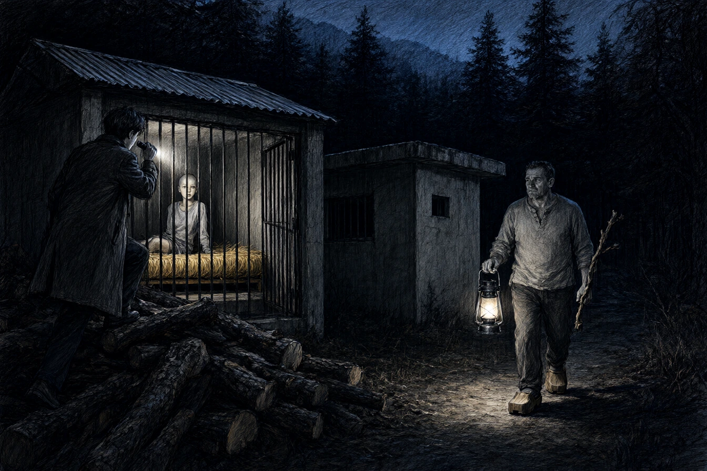

Dans le vallon boisé du Hang, au pied des rochers de grès du Donon, l'ancienne colonie de vacances de la ville de Schiltigheim avait été repeinte en jaune soufre et rebaptisée la Clairière Fraternelle.
Thomas Leclerc, rédacteur stagiaire au Journal de Sélestat, descendit de sa bicyclette devant la barrière d'épicéa écorcé. Une pancarte de bois pyrogravé indiquait : Ici, la terre n'appartient à personne et la parole appartient à tous.
Un homme d'une cinquantaine d'années, vêtu d'une chemise de chanvre sans col et chaussé de sabots de hêtre, vint à sa rencontre, un râteau de bois sur l'épaule. C'était Frédéric Vögele, ancien maître de conférences à la faculté des lettres et coordonnateur élu de la communauté.
« Vous venez pour la cueillette du sureau, camarade ? « Je viens pour le reportage d'automne promis à nos lecteurs, monsieur Vögele. La préfecture a mentionné votre communauté dans son rapport sur les alternatives de transition rurale. » « Ne dites pas monsieur, jeune homme. L'autorité est une rouille qui ronge les liens d'affection. » »
Vögele posa son râteau contre la haie de noisetiers et désigna la grande bâtisse centrale où s'activaient une vingtaine d'hommes et de femmes en tabliers gris.
« Ici, nous ne votons jamais. Nous parlons jusqu'à ce que le consentement éteigne le dissentiment. Pas de police, pas de salaires, pas de rancœur. Chaque soir, nous partageons la polenta commune dans la grande salle des verrières. »
Thomas jeta un regard vers le fond du verger. Un bâtiment d'atelier en parpaings bruts, coiffé de tôles ondulées, était fermé par une lourde targette cadenassée.
« Et là-bas ? C'est le séchoir à champignons ? « C'est le local des archives d'apaisement, » répondit Vögele avec un sourire dont la douceur s'arrêtait net au coin des yeux. »
* * *
À dix-neuf heures, le repas communautaire s'acheva par la lecture des manquements du jour.
Sous les lampes à pétrole suspendues aux solives, quarante convives écoutaient en silence une jeune femme aux cheveux ras, nommée Claire, assise au centre d'un banc sans dossier.
Vögele, debout à l'extrémité de la grande table de hêtre, tenait un carnet d'écolier ouvert entre deux doigts.
« Claire a été vue hier matin près de la borne kilométrique de la route départementale, dit-il d'une voix posée, sans colère. Elle avait dans son baluchon deux boîtes de sardines à l'huile achetées en secret à l'épicerie de Schirmeck. « J'avais faim de sel, murmura la jeune femme, les yeux fixés sur son écuelle d'émail vide. La bouillie d'avoine sans beurre me brûle l'estomac depuis quinze jours. » « Le sel du commerce capitaliste est une dépendance chimique, camarade Claire, » répliqua un menuisier à barbe grise en tapotant la table. « Si tu manges en cachette du groupe, tu réintroduis la propriété privée dans la chair même de la communauté. » »
Vögele referma le carnet.
« L'assemblée juge que Claire a besoin de quarante-huit heures de jeûne réparateur dans le pavillon de recueillement pour nettoyer son sang et son esprit. Qui porte une objection fraternelle ? »
Personne ne bougea. Deux femmes plus âgées prirent Claire par les coudes et l'aidèrent à se lever sans un mot. La jeune femme marcha vers la porte d'un pas mécanique, les paupières baissées.
* * *
À deux heures du matin, guidé par l'odeur de créosote et de bois pourri, Thomas contourna les hangars de stockage de bois de chauffage.
La porte du pavillon de recueillement n'avait point de poignée extérieure. Une lucarne grillagée haute comme deux briques s'ouvrait dans l'imposte.
Thomas se hissa sur un tas de rondins de chêne et braqua la lampe torche de son porte-clés à travers le treillis.
À l'intérieur, trois cellules de deux mètres carrés étaient séparées par des cloisons de contreplaqué marin. Dans l'une d'elles, Claire dormait sur une paillasse posée à même le ciment. Sur une étagère murale, deux registres de comptabilité à couverture de toile noire étaient empilés près d'un téléphone satellite.
Thomas frotta la poussière du carreau.
Le coin de la première page du registre supérieur portait un relevé de compte de la Banque Populaire d'Alsace, au nom de la Société Civile Immobilière du Hang, représentée par Frédéric Vögele. La colonne des crédits affichait les versements des trois derniers adhérents : soixante mille euros pour l'abandon des biens meubles, quarante-cinq mille pour le droit d'usage viager des jardins collectifs.
Une branche craqua sous un pas feutré dans le sous-bois.
Thomas glissa au bas des bûches. Vögele se tenait à trois pas, une lampe tempête à la main, un gros bâton d'aubépine calé dans la paume.
« La curiosité nocturne est un symptôme d'inadaptation sociale, jeune homme. « Vous leur prenez leur épargne avant de les enfermer dans des clapiers à lapins, Vögele. » « Nous leur achetons la tranquillité qu'ils sont incapables de se procurer seuls, » murmura le coordonnateur d'une voix douce. »
Il désigna la forêt noire qui bruissait dans le vent froid.
« Ces pauvres hères ont passé leur vie à trembler pour leur crédit logement et leur avancement de carrière. Chez nous, personne n'a peur de perdre son salaire ; ils n'en ont plus. Vous croyez qu'ils veulent retourner au bureau de poste ? Même enfermée pour deux jours, Claire sait qu'elle aura sa part de polenta mercredi matin sans avoir à supplier un patron. »
* * *
À sept heures du matin, la brume stagnait au ras des prairies de fauche.
Thomas sangla son imperméable sur le porte-bagages de sa bicyclette. Dans la cour, les pensionnaires balayaient le gravier en cadence, sous l'œil attentif de Vögele qui dégustait une infusion de tilleul sur le seuil de la grande maison.
Claire franchissait la porte du réfectoire, le pas lent, le visage gris, pour aller s'asseoir au bout de la table sans regarder personne.
Vögele tendit un pot de miel de sapin à Thomas.
« Emportez ceci pour votre directeur de journal, camarade Leclerc. Dites-lui que la pureté a ses exigences, mais que nos fraises sauvages sont les plus sucrées de tout le canton. »
Thomas prit le pot de verre, le glissa dans sa musette sans un mot de remerciement, et poussa sa bicyclette sur la route en pente sans jamais se retourner.